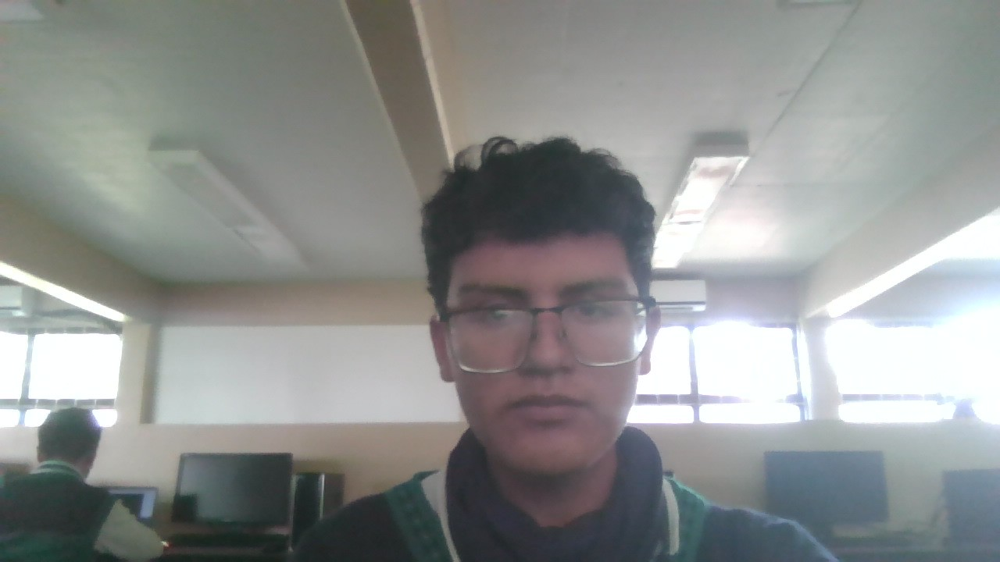

Gabriel de Jesus Aguirre Ortiznacio en 20 de agosto de 2009 en la Ciudad de México, Estudio en la Primaria Benito Juarez, y curso la secundaria desde 2020-2023 en la escuela SECUNDARIA GENERAL BASE AEREA N 40, y actualmente cursa la preparatoria en el Colegio de Estudios Cientificos y Tecnologicos del Estado de México
Es hijo de Azucena Arendi Ortiz Perez y de Israel Baltazar, tiene dos hermanos, el hermano mayor llamado Miguel Angel Aguirre Ortiz, y el menor llamado Alexis Israel Aguirre Ortiz. Tiene entrenamiento en kingboxing, karate, wing chun, y actual mente entrena esgrima japonesa.
Tambien tiene conocimiento sobre guerra moderna, hablando sobre modelos de aviones de combate, tipo de armamento, y tambien manega armas blancas.